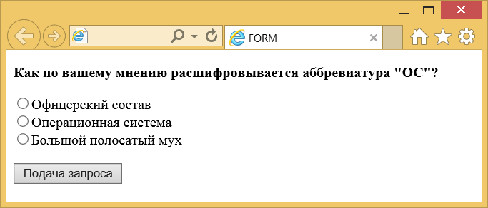

Элемент <form>
| Internet Explorer | Chrome | Opera | Safari | Firefox |
| 3 | 1 | 3.5 | 1 | 1 |
| Android | Firefox Mobile | Opera Mobile | Safari Mobile |
| 1 | 1 | 6 | 1 |
Элемент <form> устанавливает форму на веб-странице. Форма предназначена для обмена данными между пользователем и сервером. Область применения форм не ограничена отправкой данных на сервер, с помощью клиентских скриптов можно получить доступ к любому элементу формы, изменять его и применять по своему усмотрению.
Документ может содержать любое количество форм, но одновременно на сервер может быть отправлена только одна форма. По этой причине данные форм должны быть независимы друг от друга.
Для отправки формы на сервер используется кнопка Submit, того же можно добиться, если нажать клавишу Enter в пределах формы. Если кнопка Submit отсутствует в форме, клавиша Enter имитирует её использование.
Когда форма отправляется на сервер, управление данными передаётся программе, заданной атрибутом action элемента <form>. Предварительно браузер подготавливает информацию в виде пары «имя=значение», где имя определяется атрибутом name элемента <input>, а значение введено пользователем или установлено в поле формы по умолчанию. Если для отправки данных используется метод GET, то адресная строка может принимать следующий вид.
http://www.htmlbook.ru/handler.php?nick=%C2%E0%ED%FF+%D8%E0%EF%EE%F7%EA%E8%ED&page=5
Параметры перечисляются после вопросительного знака, указанного после адреса серверной программы и разделяются между собой символом амперсанда (&). Русские буквы преобразуются в шестнадцатеричное представление (в форме %HH, где HH — шестнадцатеричный код для значения ASCII-символа), пробел заменяется на плюс (+).
Допускается внутрь контейнера <form> помещать другие элементы, при этом сама форма никак не отображается на веб-странице, видны только элементы внутри неё.
Синтаксис
<form>
...
</form>Закрывающий тег
Аттрибуты
- accept-charset
- Устанавливает кодировку, в которой сервер может принимать и обрабатывать данные.
- action
- Адрес программы или документа, который обрабатывает данные формы.
- autocomplete
- Включает автозаполнение полей формы.
- enctype
- Способ кодирования данных формы.
- method
- Метод протокола HTTP.
- name
- Имя формы.
- novalidate
- Отменяет встроенную проверку данных формы на корректность ввода.
- target
- Имя окна или фрейма, куда обработчик будет загружать возвращаемый результат.
Также для этого элемента доступны универсальные атрибуты и события.
Пример
<!DOCTYPE HTML>
<html>
<head>
<meta charset="utf-8">
<title>FORM</title>
</head>
<body>
<form action="handler.php">
<p><b>Как по вашему мнению расшифровывается аббревиатура "ОС"?</b></p>
<p><input type="radio" name="answer" value="a1">Офицерский состав<Br>
<input type="radio" name="answer" value="a2">Операционная система<Br>
<input type="radio" name="answer" value="a3">Большой полосатый мух</p>
<p><input type="submit"></p>
</form>
</body>
</html>Результат данного примера показан на рис. 1.

Рис. 1. Вид элементов формы в окне браузера
Спецификация ?
| Спецификация | Статус |
|---|---|
| WHATWG HTML Living Standard | Живой стандарт |
| HTML5 | Предлагаемая рекомендация |
| HTML 4.01 Specification | Рекомендация |
Спецификация
Каждая спецификация проходит несколько стадий одобрения.
- Recommendation (Рекомендация) — спецификация одобрена W3C и рекомендована как стандарт.
- Candidate Recommendation (Возможная рекомендация) — группа, отвечающая за стандарт, удовлетворена, как он соответствует своим целям, но требуется помощь сообщества разработчиков по реализации стандарта.
- Proposed Recommendation (Предлагаемая рекомендация) — на этом этапе документ представлен на рассмотрение Консультативного совета W3C для окончательного утверждения.
- Working Draft (Рабочий проект) — более зрелая версия черновика после обсуждения и внесения поправок для рассмотрения сообществом.
- Editorʼs draft (Редакторский черновик) — черновая версия стандарта после внесения правок редакторами проекта.
- Draft (Черновик спецификации) — первая черновая версия стандарта.
Особняком стоит живой стандарт HTML (Living) — он не придерживается традиционной нумерации версий, поскольку находится в постоянной разработке и обновляется регулярно.